Instalacja Arch Linuxa
Moja przygoda z instalacja archa.
Na początku sprawdźmy nasze dyski żeby określić na którym urządzeniu chcemy stworzyć partycje i zainstalować Archa.
można się posłużyć 2 komendami (lsblk) - lista urządzeń blokowych lub (fdisk -l) polecenie wyświetla listę dysków.
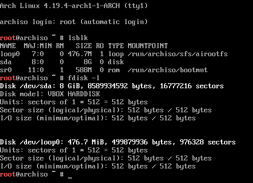Dyski znajdują się w folderze /dev czyli device (z angielskiego urządzenia) są one numerowane alfabetycznie od a do z,
kiedy jesteśmy pewni jakiego dysku chcemy użyć pora utworzyć partycje za pomocą (cfdisk).
Utworzymy teraz 3 partycje 512mb dla gruba, 5gb na system, i 2.5gb dla urzytkownikow.
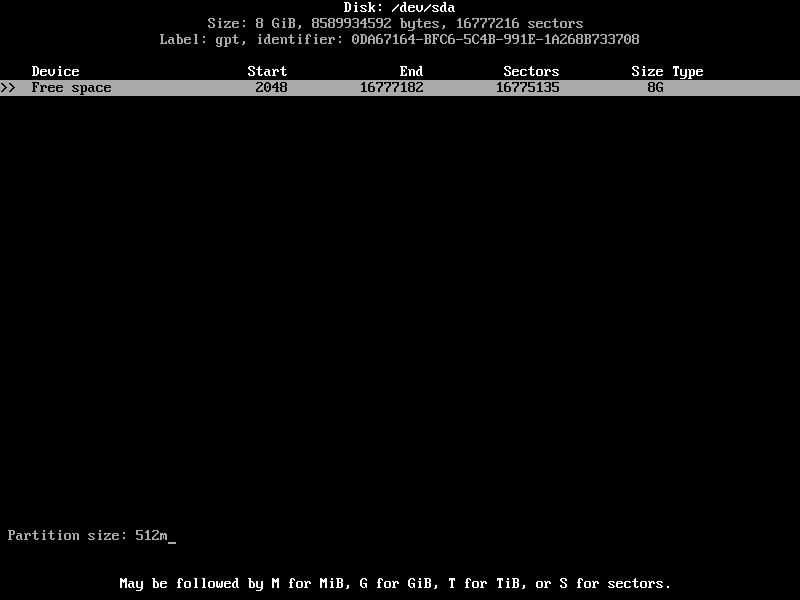 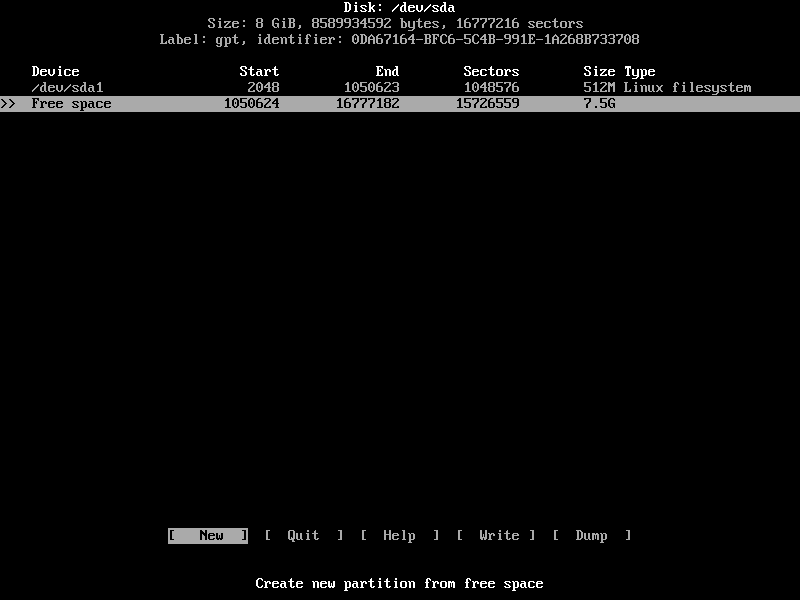 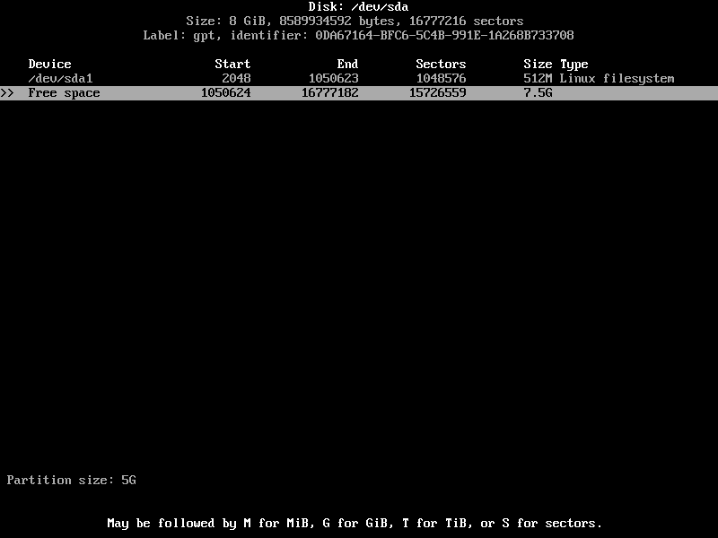 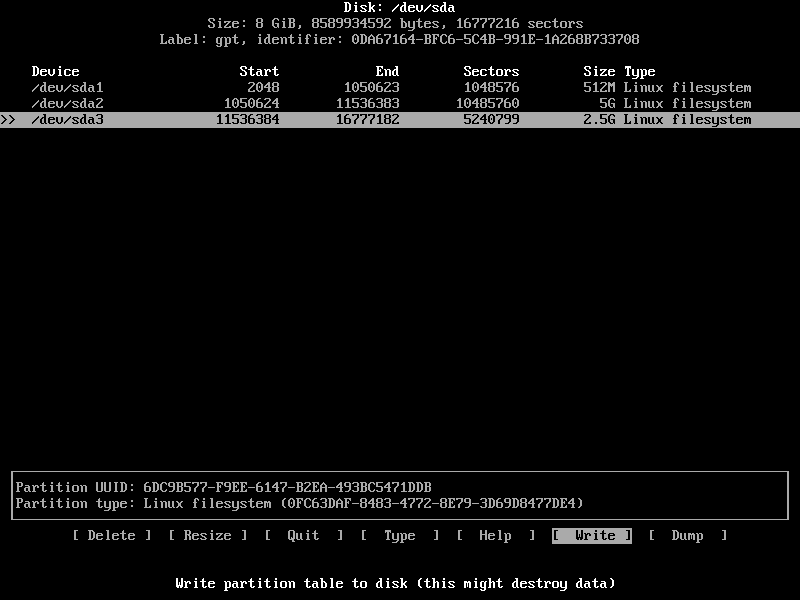Sprawdzamy utworzone partycje polecaniami lsblk lub fdisk -l jak kto woli.
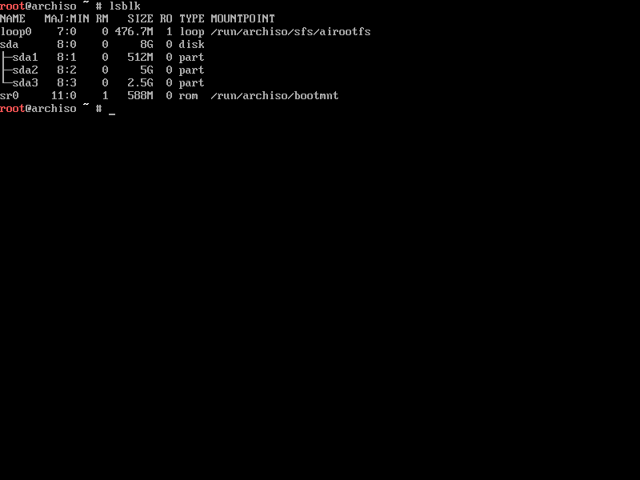 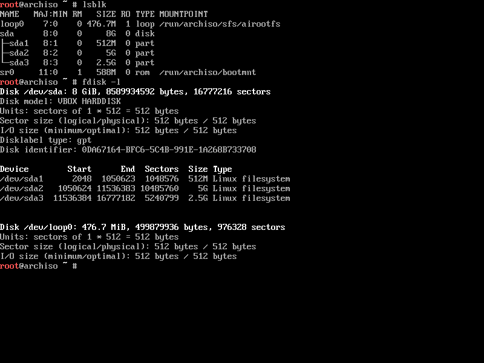Tworzymy 3 systemy plików fat32 dla gruba za pomocą polecenia mkfs.fat -F32, ext4 dla systemu oraz użytkowników na 2 partycjach za pomocą mkfs.ext4.
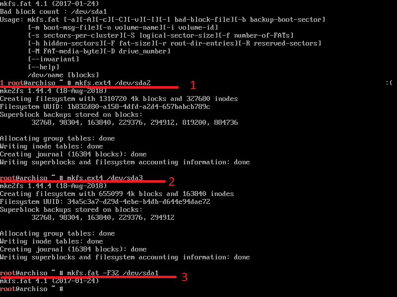Czas zamontować partycje w katalogu /mnt stworzyć folder /home, oraz zamontowanie go w odpowiednim miejscu.
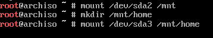Zobaczmy jak się zamontowały nasze partycje poleceniem lsblk.
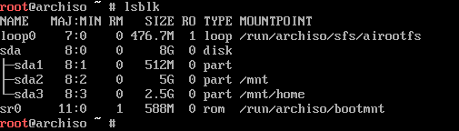Czas na instalacje systemu za pomocą polecenia (pacstrap -i) nasza partycje na system zamontowaliśmy w /mnt wiec wskazujemy w tym miejscu ma się zainstalować system,
oraz pokazujemy mu że interesuje nas paczka base-devel.
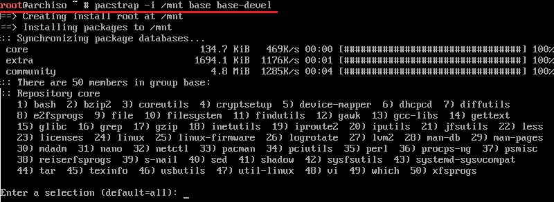Przeklikujemy enterem ponieważ chcemy wszystkie pakiety oraz na końcu potwierdzamy wpisując y.

Po instalacji powinnyśmy mięć takie okno.
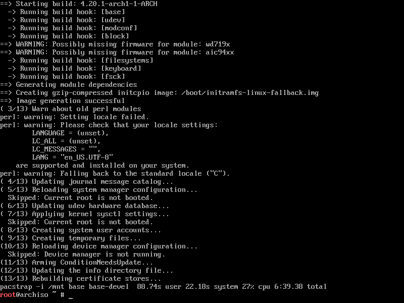Generujemy fstab oraz odpalamy system w chroot za pomocą arch-chroot.
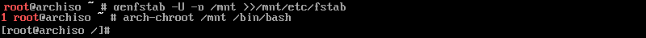Czas ustawić opcje językowe otwieramy edytorem nano plik /etc/locale.gen i usuwamy komentarz (#) pl_PL.UTF-8 UTF-8.
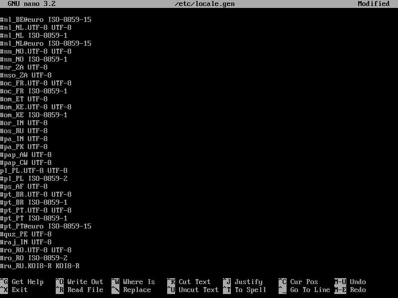Generujemy ustawienia języka, tworzymy dowiązanie symboliczne do strefy czasowej i ustawiamy zegar systemowy, po czym zajmujemy się nazwą hosta za pomocą echo.
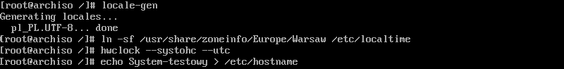Konfigurujemy plik hosts dla pętli zwrotnej.
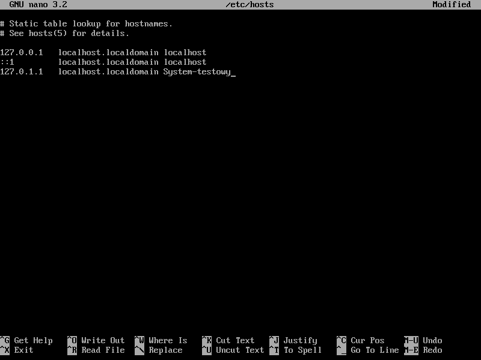Instalujemy NetworkManager, aby mieć możliwość konfiguracji sieci w naszym systemie.
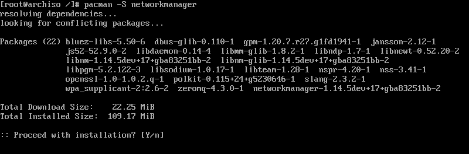Włączamy NetworkManager dla systemd by był włączony przy starcie systemu.
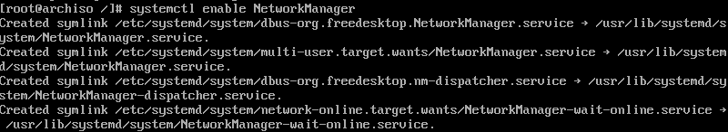Kolejną ważną kwestią jest zmiana hasła dla użytkownika root.
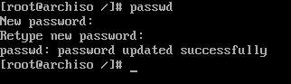Instalujemy grub oraz efibootmng.
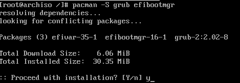Tworzymy folder /boot/efi oraz montujemy tam nasza partycje 512mb z systemem plików fat32.
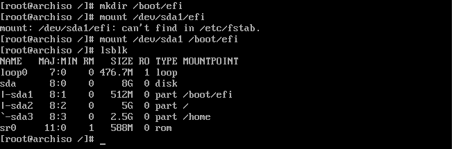Instalujemy gruba, generujemy konfiguracje poleceniem grub-mkconfig, tworzymy katalog /boot/efi/EFI/BOOT
następnie kopiujemy tam plik jak na obrazku niżej zmieniając nazwę na podaną z dużej litery.
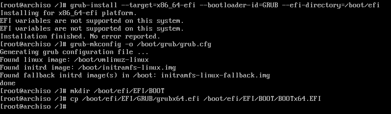Tworzymy/edytujemy plik /boot/efi/startup.nsh wpisując co na obrazku pamietamy, aby używać \ do oznaczenia ścieżki.
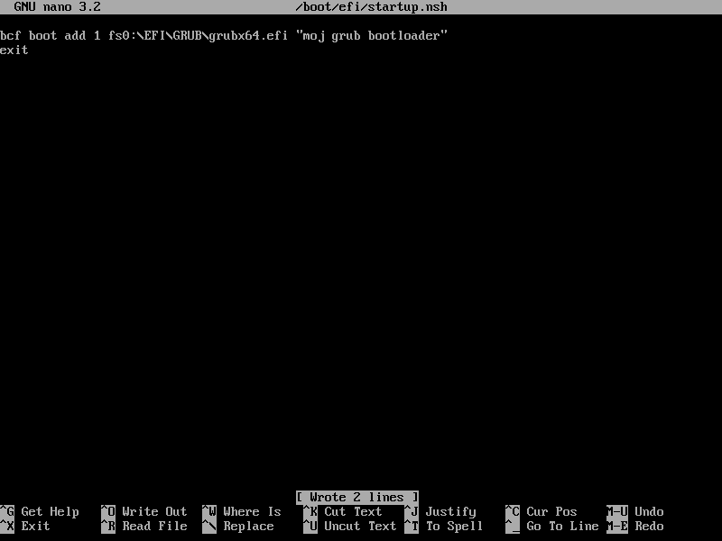wychodzimy z chroot, odmontujemy zamontowane partycje rekursywnie za pomoca (umount -R).
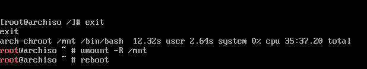Logujemy sie do systemu jako root.